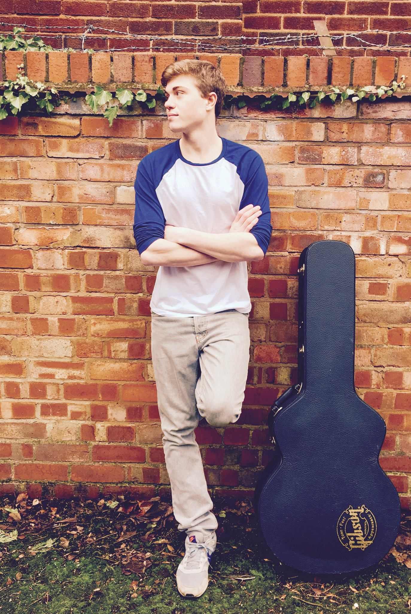

About
River Clark is a Pop/Rock Singer-Songwriter from Birmingham, UK.
His original work is driven by carefully crafted piano parts, which lie at the core of the song. He produces great variety in his tracks, from Piano driven high-energy songs to delicately plucked heart-breaking ballads on Guitar.
River's sound takes inspiration from the likes of Tom Odell, James Bay, Shawn Mendes, and The Fray
River's debut record, The Dawn EP is out now! Download it from Bandcamp now
Alongside his original work, River specialises in Modern Pop and Classic Rock covers, performing at bars, pubs, restaurants, weddings, and special events. He offers professional, high quality, and friendly performances at reasonable prices
To make a booking enquiry, please email bookings (at) riverclarkmusic.co.uk
Music
River Clark specialises in acoustic covers of Top 40s, Rock and Pop hits - from 1950s classics to present-day chart toppers, and performs as a singing guitarist or pianist
For a booking enquiry, please email bookings(at)riverclarkmusic.co.uk
A selection of the artists regularly featured:
Classic Rock and Pop Hits
ABBA - Adele - Avril Lavigne - Amy Winehouse - The Beatles - Billy Joel - Buddy Holly - Byran Adams - Bruce Springsteen - Bastille - The Bee Gees - The Beach Boys - Blondie - Bob Marley - Bon Iver -Bon Jovi - Bob Dylan - Ben Howard - The Buzzcocks - Blink 182 - Ben E King - Chuck Berry - Cat Stevens - Christina Aguilera - Catfish & The Bottlemen - Coldplay - The Calling - David Bowie - Don McClean - Duffy - Dolly Parton - Erasure - Eric Clapton - The Everly Brothers - Elvis Presley - Ed Sheeran - Elton John - The Eagles - Fleetwood Mac - Frank Turner - FUN - George Ezra - Green Day - George Micheal - Grease The Musical - Goo Goo Dolls - James Bay - John Lennon - Journey - James Blunt - Jason Mraz - The Jam - Jake Bugg - John Mayer - Kaiser Chiefs - Kings Of Leon - Kodaline - The Killers - Kooks - Linkin Park - Lady Antebellum - McFly - Madness - McBusted - Mumford & Sons - Michael Buble - The Monkees - Noah & The Whale - Oasis - Olly Murs - Plain White T’s - Passenger - The Police - Pink Floyd - The Rememberants - Razorlight - R.E.M. - Red Hot Chilli Peppers - Robbie Williams -Ronan Keating - The Stereophonics - Sam Cooke - Scouting For Girls - Survivor - Supertramp - Snow Patrol - Sum 41 - Sheryl Crow - The Shires - Simon & Garfunkel - Tracy Chapman - Take That - Tom Odell - Tom Petty - U2 - UB40 - Van Morrison - Whitney Houston - The Wombats
Top 40s / Present-day Rock & Pop Hits
Adele - Avicii - Anne Marie - Ariana Grande - Alicia Keys - Bastille Beyonce - Bruno Mars - Britney Spears - Carly Rae Jepson - Charlie Puth - Camilla Cabello - Coldplay - Clean Bandit - Catfish & The Bottlemen - Christina Aguilera - Dua Lipa - Dear Evan Hansen The Musical - Ed Sheeran - Emeli Sande - Enrique Iglesias - Ellie Goulding - FUN - Frank Turner - George Ezra - Grease The Musical - Great Big World - Green Day - Hailee Steinfield - Harry Styles - Imagine Dragons - Justin Bieber - James Bay - Jess Glynn - James Blunt - Jason Mraz - Jamie Lawson - John Legend - Justin Timberlake- Jason Derulo - Jake Bugg - Kaiser Chiefs - Kings Of Leon - Kodaline - The Killers - Kooks - Katy Perry - The Lumineers - Labrinth- Leona Lewis - Little Mix - Lawson - McFly - Mumford & Sons - McBusted - Maroon 5 - Noah & The Whale - Niall Horan - Neyo - One Direction - One Republic - Olly Murs - Passenger - Rihanna - Red Hot Chilli Peppers - Rag ’N’ Bone Man - Sean Kingston - Scouting For Girls - Snow Patrol - Shawn Mendes - The 1975 - The Script - The Shires - Sam Smith - Tom Grennan - The Greatest Showman The Musical - Tom Odell - Taylor Swift - The Wombats - Years & Years - ZAYN - Zara Larsson
Events

River specialises in performing at private events such as weddings, parties, and other formal celebrations.
To make a booking enquiry, please email bookings (at) riverclarkmusic.co.uk
- EON One Take Competition - Runner Up
- Rummers Bar, Open Mic Grand Festival - 2nd Place
- Aberystwyth Battle of the Bands Live Final - 2nd Place
- OPEN MIC UK - Live Regional Finals (To Be Continued...)
- The Future Music Songwriting Competition - Live Regional Finals (To Be Continued...)
Reviews
At the most exciting moment of our wedding day (saying our vows and greeting our guests as the new Mr & Mrs) the whole experience was topped by the fantastic music created by [River]! He was not only a great singer and performer but he was also a genuinely nice guy. He created a superb atmosphere and kept all of our guests happy whilst we were away getting photos taken. I couldn’t recommend [him] enough. He was fantastic and we would go straight to him for future events in our family. Thank you Adam!
Victoria C, (Wedding Reception)
We did just wanted to say how impressed we were with [River]. He was totally adaptable and helped us out with the ‘being announced into the room’ and everything else - without any fuss, so thank you for your professionalism. The song choices and the performance were outstanding, he is very talented and all our guests thought he was absolutely amazing. We would recommend Adam to anyone and wish to hire him again at any opportunity. Thank you so much for being a delightful part of our perfect day!
Angela W, Wedding
[River] was amazing - his performance was brilliant and all my guests really enjoyed his set - everyone commented on how great he was he really set the scene and made it special for us! His communication throughout was exemplary - he took note of everything I asked and delivered it perfectly. He is also very friendly and likeable!! Absolutely recommend!
Benjamin K, (Family Celebration)
Prices
Guitar & Vocals / Piano & Vocals - £100 an hour
Please note - prices may vary slighly depending on booking details and on public holidays. To make a booking enquiry, please email bookings (at) riverclarkmusic.co.uk
Contact
You can get in contact with us by email at booings (at) riverclarkmusic.co.uk
He's also on these social media platforms: